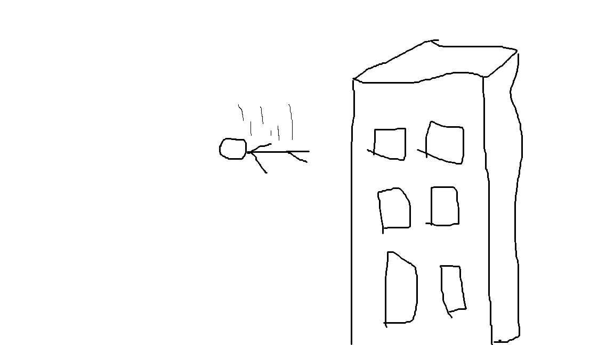
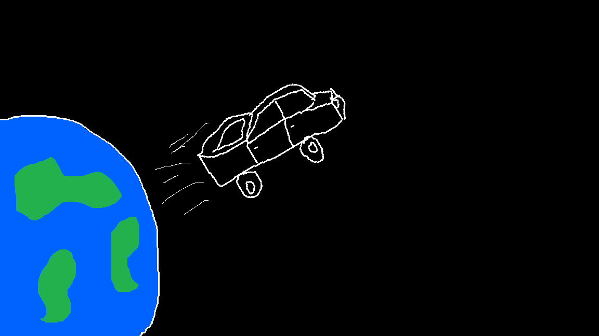
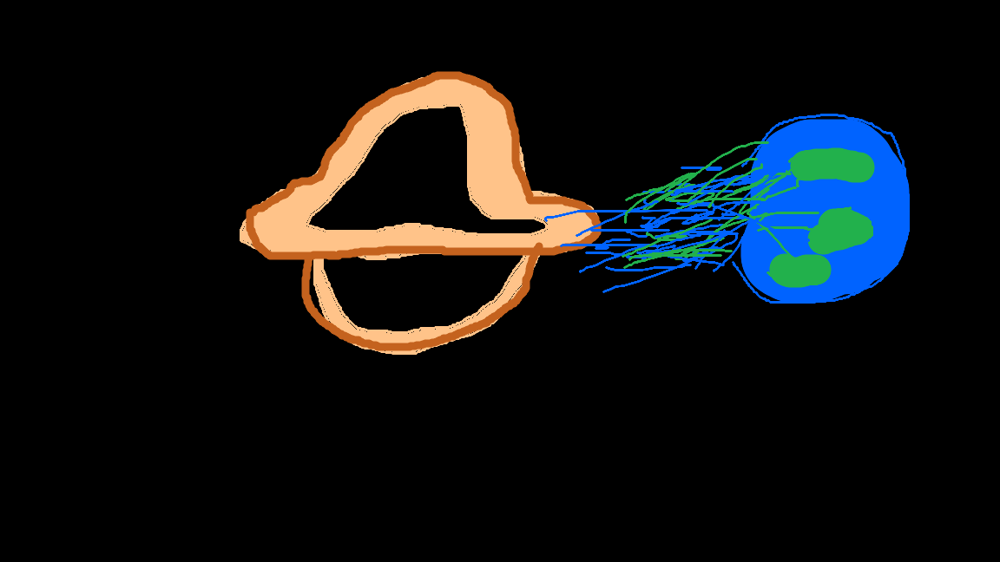
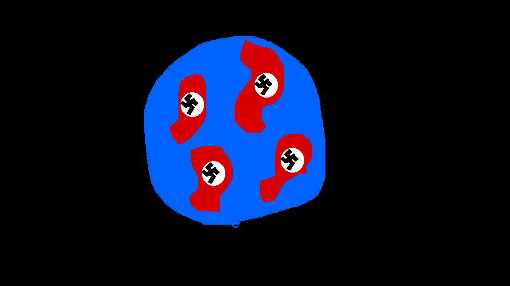

Pular de um prédio sem equipamentos:

Pular de um avião sem paraquedas e só um trampolim embaixo:
Ir com uma caminhonete a mais 42.320 KM/H em uma rampa pra escapar da Terra:

Ir com uma máquina do tempo em 2008 antes de começar a funcionar o acelerador de partículas LHC você gerar um erro no acelerador de partículas pra gerar um buraco negro:

Voltar para 1939 e derrotar todos os inimigos da Alemanha para ela ganhar a Segunda Guerra Mundial:
